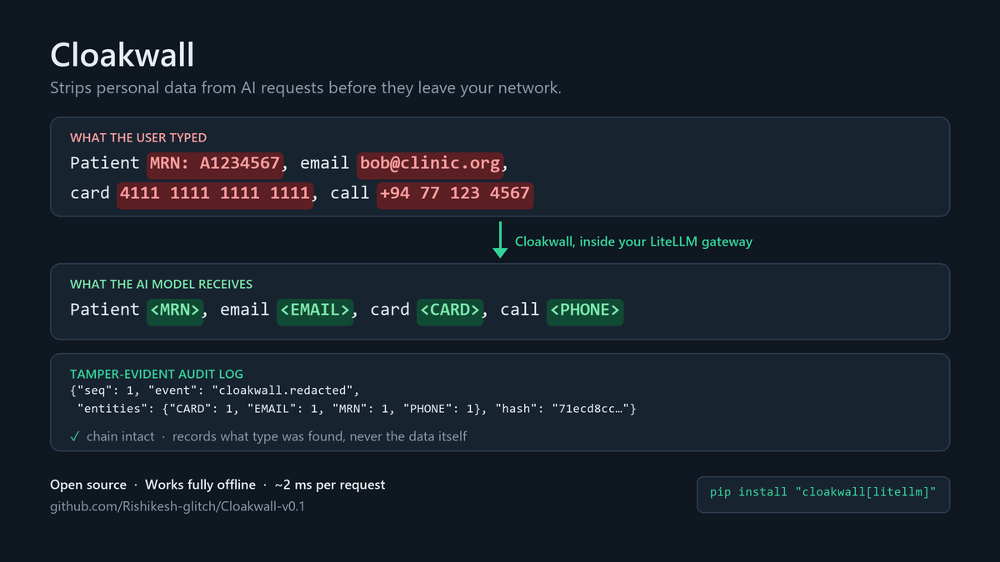

Stop your AI apps leaking personal data.
Cloakwall removes personal and health data from every LLM request before it leaves your network, and keeps a tamper-evident audit log you can show your auditor.

The problem
Teams are wiring LLMs and AI agents into products that handle patient records, card numbers and customer identities. Every prompt, and every tool call an agent makes, can carry that data to an outside model provider. In healthcare and finance the next question is always the same: can you prove it didn't happen?
How it works
Cloakwall is a guardrail for LiteLLM, the open-source gateway many teams use to route AI traffic. Six lines of configuration and it runs inside the gateway you already have.
1. Detect
Finds emails, card numbers, SSNs, IBANs, API keys, medical record and NHS numbers, phone numbers, IP addresses and dates of birth.
2. Check
Validates each match: cards must pass the Luhn check, NHS numbers the mod-11 check. That keeps order numbers and phone numbers from being flagged by mistake.
3. Replace
Swaps the value for a label (<EMAIL>), a consistent code (<EMAIL:7f3a91c2>) or the last four digits (<CARD:****1111>), so the AI can still help.
4. Record
Writes a hash-chained audit entry: what type was found and how many, never the value. Edited, deleted or truncated entries are detectable. Exports to Splunk, Datadog or Elastic.
It checks every path, not just the chat message
Most filters only look at the message text. AI agents leak through other paths too.
| Request type | What Cloakwall cleans |
|---|---|
| Chat completions | Messages, including tool-call arguments |
| Anthropic messages | System prompt, text blocks, tool_use input, tool_result content |
| Responses API | Input items, function-call arguments and outputs |
| Completions, images, embeddings | Prompt and input text |
| Model replies (optional) | Content and tool calls, including streamed replies: a card number split across two chunks is still caught |
Built for networks where data can't leave
Runs in-process
No sidecar containers, no external service, no AI model to download.
Works air-gapped
The core is pure Python standard library and opens no network connections. Pair it with a local model and nothing leaves your network.
Open source
AGPL-3.0. Your security team can read every line before trusting it. A commercial licence is available for closed-source use.
Measured, not promised
Measured on a deliberately modest machine: a 2015 Intel Core i3 laptop, Linux. The script to reproduce these numbers is in the repository.
| Scenario | Typical time (P50) |
|---|---|
| Request with no personal data | 0.06 ms |
| Request with personal data, including a durable audit entry | 1.8 ms |
| Audit log entry, written safely to disk | 0.28 ms |
Honest limits
It's early. Version 0.1, with 76 automated tests and checks against the real LiteLLM proxy, but not yet running in production anywhere. That's why we're looking for design partners.
Design partners wanted
We're looking for 5 teams in healthcare, fintech or other regulated industries running LLMs, to use Cloakwall in a real setting and shape what comes next.
What you get
- The commercial licence at a reduced first-year price
- Direct support from the founder
- Help mapping the audit trail to HIPAA, GDPR and SOC 2
- A real say in the roadmap
What we ask
- Run it on real traffic
- A short call each month
- Honest feedback, and a case study if it works for you